Migrate your SQL Server databases without changing your apps
Azure SQL Database Managed Instance (SQL MI) is a new deployment option of Azure SQL Database which enables the migration of existing on-premises SQL Server databases to the cloud with minimal or no application and database changes. With SQL MI, you get the broadest SQL Server engine compatibility and native virtual network (VNET) support. This option gives you the best of SQL Server, plus the operational and cost benefits of an intelligent, fully managed service. SQL MI is ideal for migrating a large number of existing SQL Server databases from on-premises or virtual machines to SQL Database.
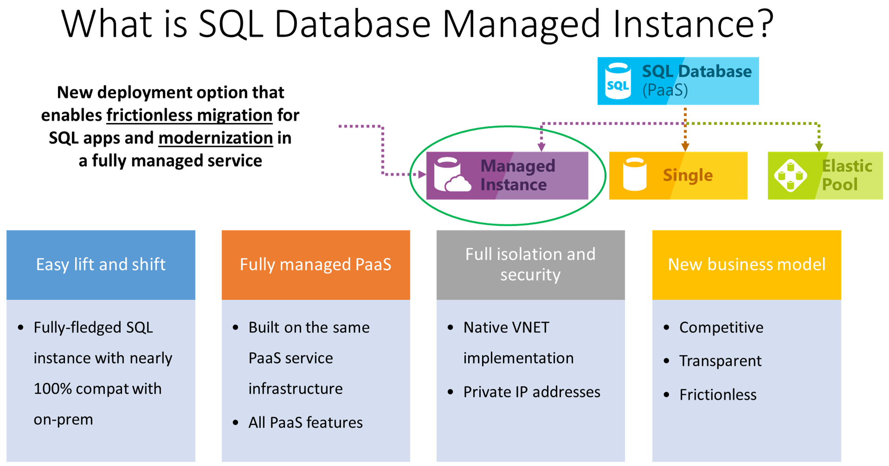Diagram outlining the key features of managed instances.
Accelerate your database migration
Reduce the complexity of your cloud migration by using a single comprehensive service instead of multiple tools. Azure Database Migration Service is designed as a seamless, end-to-end solution for moving on-premises SQL Server databases to the cloud. Use the Database Migration Guide for recommendations, step-by-step guidance, and expert tips on your specific database migration.
Maximize ROI by migrating to the cloud
Reduce the burden of data-tier management and save time and costs by migrating workloads to the cloud. Azure Hybrid Benefit for SQL Server provides a cost-effective path for migrating hundreds or thousands of SQL Server databases with minimal effort. Use your SQL Server licenses with Software Assurance to pay a reduced rate when migrating to the cloud. Save up to 55 percent with Azure Hybrid Benefit, and up to 80 percent with reserved capacity. Learn how customers have increased productivity by up to 40 percent by migrating to Azure SQL Database.
Scenario overview
ContosoAuto runs their operations and finance database, ContosoAutoDb, on an on-premises SQL Server 2008 R2 database. This system is vital to the company’s daily activities and as SQL Server 2008 R2 is approaching end of support, they are looking at options for migrating this database into Azure. They have read about some of the advanced security and performance tuning options that are available only in Azure and would prefer to a migrate the database into a platform-as-a-service (PaaS) offering, if possible.
ContosoAuto is using the Service Broker feature of SQL Server within the ContosoAutoDb database. Service Broker is a feature of SQL Server used for sending and receiving guaranteed, asynchronous messages by using extensions to the Transact-SQL Data Manipulation Language (DML). This functionality is being used for several critical business processes, and they cannot afford to lose this capability when migrating their operations database to the cloud. They have also stated that, at this time, they do not have the resources to rearchitect the solution to use an alternative message broker.
In this experience, you will use the Microsoft Data Migration Assistant (DMA) to perform assessments of feature parity and compatibility against both Azure SQL Database and Azure SQL Database Managed Instance, with the goal of migrating the ContosoAutoDb database into an Azure PaaS offering with minimal or no changes. After completing the assessments, you will perform the database migration and then update ContosoAuto’s operations web application to use the new database. Once that is complete, you will review and enable some of the database features that are only available in Azure.
Task 1: Perform database assessments for migration
In this task, you will use the Microsoft Data Migration Assistant (DMA) to perform assessments on the ContosoAutoDb database. You will create two assessments, one for a migration to Azure SQL Database, and then a second for SQL MI. These assessments will provide reports about any feature parity and compatibility issues between the on-premises database and the Azure managed SQL database service options.
DMA helps you upgrade to a modern data platform by detecting compatibility issues that can impact database functionality in your new version of SQL Server or Azure SQL Database. DMA recommends performance and reliability improvements for your target environment and allows you to move your schema, data, and uncontained objects from your source server to your target server.
Launch the Microsoft Data Migration Assistant from the Windows Start menu within your lab environment.
The Microsoft Data Migration Assistant is highlighted in the Windows start menu.
In the DMA dialog, select + from the left-hand menu to create a new project.
The new project icon is highlighted in DMA.
In the New project pane, set the following:
Project type: Select Assessment.
Project name: Enter ToAzureSqlDb.
Source server type: Select SQL Server.
Target server type: Select Azure SQL Database.
New project settings for doing an assessment of a migration from SQL Server to Azure SQL Database.
Select Create.
On the Options screen, ensure Check database compatibility and Check feature parity are both checked, and then select Next.
Check database compatibility and check feature parity are checked on the Options screen.
On the Sources screen, enter the following into the Connect to a server dialog that appears on the right-hand side:
Server name: Enter the DNS name of the shared sqlServer2008R2 VM, sqlserver2008r2.westus.cloudapp.azure.com.
Authentication type: Select SQL Server Authentication.
Username: Enter WorkshopUser
Password: Enter Password.1!!
Encrypt connection: Check this box.
Trust server certificate: Check this box.
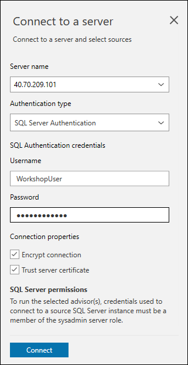In the Connect to a server dialog, the values specified above are entered into the appropriate fields.
Select Connect.
On the Add sources dialog that appears next, check the box for ContosoAutoDb and select Add.
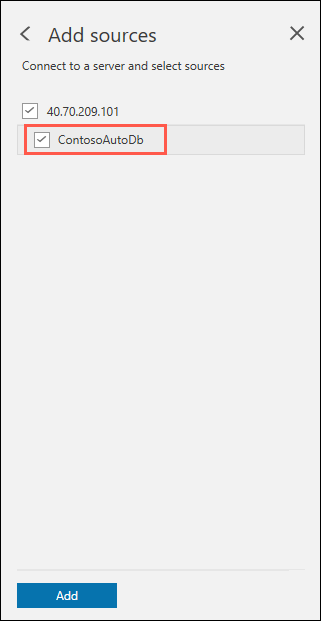The ContosoAutoDb box is checked on the Add sources dialog.
Select Start Assessment.
Start assessment
Review the assessment of ability to migrate to Azure SQL Database.
For a target platform of Azure SQL Database, feature parity shows two features which are not supported in Azure SQL Database. The Service broker feature is selected on the left and on the right Service Broker feature is not supported in Azure SQL Database is highlighted.
The DMA assessment for a migrating the ContosoAutoDb database to a target platform of Azure SQL Database shows two features in use which are not supported in Azure SQL Database. These features, cross-database references and Service broker, will prevent ContosoAuto from being able to migrate to the Azure SQL Database PaaS offering.
With one PaaS offering ruled out due to feature parity, you will now perform a second assessment, this time for a migration to Azure SQL Database Managed Instance (SQL MI). To get started, select + on the left-hand menu in DMA to create another new project.
The new project icon is highlighted in DMA.
In the New project pane, set the following:
Project type: Select Assessment.
Project name: Enter ToAzureSqlMi.
Source server type: Select SQL Server.
Target server type: Select Azure SQL Database Managed Instance.
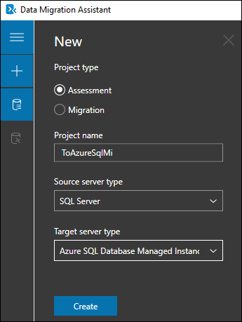New project settings for doing an assessment of a migration from SQL Server to Azure SQL Database Managed Instance.
Select Create.
On the Options screen, ensure Check database compatibility and Check feature parity are both checked, and then select Next.
Check database compatibility and check feature parity are checked on the Options screen.
On the Sources screen, enter the following into the Connect to a server dialog that appears on the right-hand side:
Server name: Enter the DNS name of the shared sqlServer2008R2 VM, sqlserver2008r2.westus.cloudapp.azure.com.
Authentication type: Select SQL Server Authentication.
Username: Enter WorkshopUser
Password: Enter Password.1!!
Encrypt connection: Check this box.
Trust server certificate: Check this box.
In the Connect to a server dialog, the values specified above are entered into the appropriate fields.
Select Connect.
On the Add sources dialog that appears next, check the box for ContosoAutoDb and select Add.
The ContosoAutoDb box is checked on the Add sources dialog.
Select Start Assessment.
Start assessment
Review the assessment of ability to migrate to Azure SQL Database Managed Instance.
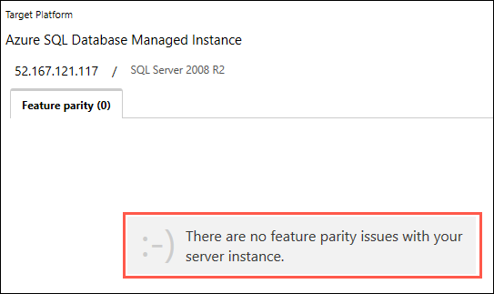For a target platform of Azure SQL Database Managed Instance, there are no feature parity issues found.
The assessment report for a migrating the ContosoAutoDb database to a target platform of Azure SQL Database Managed Instance shows no feature parity. The database, including the cross-database references and Service broker features, can be migrated as is, providing the opportunity for ContosoAuto to have a fully managed PaaS database instance running in Azure. Previously, their options for migrating a database using features, such as Service Broker, incompatible with Azure SQL Database, were to deploy the database to a virtual machine running in Azure (IaaS) or modify their database and applications to not use the unsupported features. The introduction of Azure SQL MI, however, provides the ability to migrate databases into a managed Azure SQL database with near 100% compatibility, including the features that prevented them from using Azure SQL Database.
Task 2: Migrate the database to SQL MI
In this task, you will migrate the ContosoAutoDb database from the on-premises SQL 2008 R2 database to SQL MI, targeting the Business Critical service tier.
The Business Critical service tier is designed for business applications with the highest performance and high-availability (HA) requirements.
To migrate the ContosoAutoDb database from SQL 2008 R2 to SQL MI you will use a backup of the database stored in an Azure Blob storage account. RESTORE of native backups (.bak files) taken from SQL Server on-premises or SQL Server on Virtual Machines, available on Azure Storage, is one of key capabilities of the managed instance deployment option that enables quick and easy offline database migration. The following diagram provides a high-level overview of the process:
Diagram of the native RESTORE from URL capability.
Open SQL Server Management Studio 17 (SSMS) from the Microsoft SQL Server Tools 17 folder in the Windows Start menu and connect to your SQL MI database. On the connection dialog enter the following:
Server name: Enter the name of the shared SQL MI server, tech-immersion-sqlmi-shared.521f7783692d.database.windows.net.
Authentication: Select SQL Server Authentication.
Login: Enter tiuser
Password: Enter Password.1234567890
Check the Remember password box.
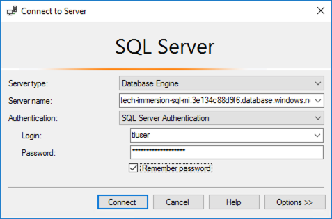Connection dialog for SSMS.
Select Connect.
To perform the RESTORE process, credentials for a pre-configured storage account and SAS token have already been added to the Managed Instance using the create a credential method. This process essentially creates a connection from your SQL MI database to the Blob storage account, allowing you to access files stored in the target container, database-backup. Because this is a shared SQL MI, only one credential is needed for all attendees. If you are curious, you would create it with a SQL statement similar to the below.
You can verify the credential’s access to the Blob storage account by selecting New Query from the SSMS toolbar. Paste the following SQL script to get a backup file list from the storage account into the new query window and select Execute from the toolbar.
Script to list files in a backup file in Blob storage.
You are now ready to restore the ContosoAutoDb database in SQL MI. In this step, you will be creating a new database on the Managed Instance. Select New Query on the SSMS toolbar again, then paste the following SQL script into the new query window. Replace the XXXXX value with the unique identifier assigned to your for this workshop. The database name in the query should look something like ContosoAutoDb-01234.
NOTE: You may notice multiple databases in on the Managed Instance. This is because the SQL MI is a shared resource for all workshop attendees, so make sure you use your assigned unique ID when restoring and accessing the database.
Select Execute on the SSMS toolbar.
The restore will take 1 - 2 minutes to complete. You will receive a “Commands completed successfully” message when it is done.
When the restore completes, expand Databases in the Object Explorer, and then expand ContosoAutoDb-XXXXX (where XXXXX is the unique identifier assigned to you for this workshop) and Tables. You will see that the tables are all listed, and the SQL Server 2008 R2 database has been successfully restored into SQL MI.
The Object Explorer is displayed with Databases, ContosoAutoDb, and Tables expanded.
NOTE: Your database name will differ from the above screen shot, in that it will contain the unique identifier assigned to you for this workshop, such as ContosoAutoDb-01234. The SQL Managed Instance is shared for all workshop participants, so you may also see databases for other participants.
Task 3: Update the web application to use the new SQL MI database
With the ContosoAutoDb database now running on SQL MI in Azure, the next step is to make the required modifications to the ContosoAuto operations web application. The operations web app is currently running an Azure App Service Environment, which was provisioned in the same virtual network as the SQL Managed Instance.
In this task, you will make updates to the ContosoAuto operations web application to enable it to connect to and utilize the SQL MI database.
Using a web browser, navigate to the Azure portal, select Resource groups from the left-hand menu, and then select the resource group named tech-immersion-XXXXX (where XXXXX is the unique identifier assigned to you for this workshop).
The tech-immersion resource group is selected.
Select the Tech Immersion Web App Service ending with your unique identifier (e.g., techimmersionwebapp01234) from the list of resources.
The App Service resource is selected from the list of resources in the tech-immersion resource group.
On the App Service blade, select Application settings under Settings on the left-hand side.
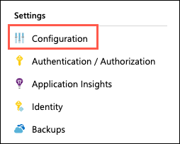The Application settings item is selected under Settings.
On the Application settings blade, scroll down and locate the Connection strings section. Paste the connection string value below into the value for the ContosoAutoDbContext connection string.
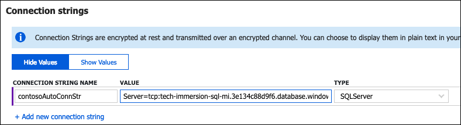The copied SQL MI connection string is pasted into the value for the ContosoAutoDbContext connection string.
Repeat the previous step, this time pasting the same connection string into the ContosoAutoDbReadOnlyContext connection string.
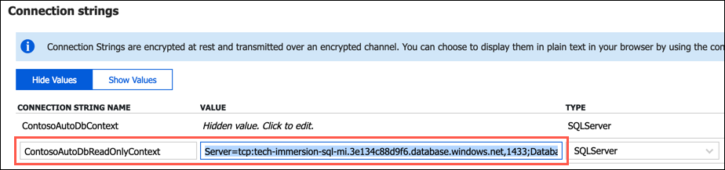Read-only connection string.
Select Save at the top of the Application settings blade.
The save button on the Application settings blade is highlighted.
NOTE: The astute reader may have noticed in the above steps that the Web App continues to query a database called ContosoAutoDb and not the database that was just restored. This is intended only to shorten the application configuration steps. Rest assured that the changes you made to the database connection string would enable your application to reach any of the databases loaded on to the SQL Server Managed Instance.
Select Overview to the left of the Application settings blade to return to the overview blade of your App Service.
Overview is highlighted on the left-hand menu for App Service
On the overview blade, click the URL of your App service to launch the website. This will open the URL in a browser window.
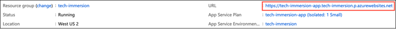The App service URL is highlighted.
Verify that the web site and data is loaded correctly. The page should look similar to the following:
Screenshot of the ContosoAuto Operations Web App.
That is it. You were able to successfully connect your application to the new SQL MI database by simply updating the application’s connection string. No code changes or other updates are needed!
Task 4: Enable Dynamic Data Masking
Dynamic Data Masking (DDM) limits sensitive data exposure by masking it to non-privileged users. This feature helps prevent unauthorized access to sensitive data by enabling customers to designate how much of the sensitive data to reveal with minimal impact on the application layer. It’s a policy-based security feature that hides the sensitive data in the result set of a query over designated database fields, while the data in the database is not changed.
For example, a service representative at a call center may identify callers by several digits of their credit card number, but those data items should not be fully exposed to the service representative. A masking rule can be defined that masks all but the last four digits of any credit card number in the result set of any query. As another example, an appropriate data mask can be defined to protect personally identifiable information (PII) data, so that a developer can query production environments for troubleshooting purposes without violating compliance regulations.
In this task, you will enable DDM on the CardNumber field in the CreditCard table in the ContosoAutoDb database, to prevent queries against that table from returning the full credit card number.
Return to the SQL Server Management Studio (SSMS) window you opened previously.
Expand Tables under the ContosoAutoDb-XXXXX (where XXXXX is the unique identifier assigned to you for this workshop) and locate the Sales.CreditCard table. Expand the table columns and observe that there is a column named CardNumber. Right-click the table, and choose Select Top 1000 Rows from the context menu.
The Select Top 1000 Rows item is highlighted in the context menu for the Sales.CreditCard table.
In the query window that opens, review the Results, including the CardNumber field. Notice it is displayed in plain text, making the data available to anyone with access to query the database.
Plain text credit card numbers are highlighted in the query results.
So we can test the mask being applied to the CardNumber field, you will first create a user in the database that will be used for testing the masked field. In SSMS, select New Query and paste the following SQL script into the new query window, replacing XXXXX with your unique ID:
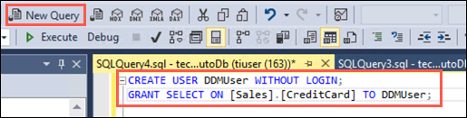A Create User query is pasted into the new query window.
The SQL script above create a new user in the database named DDMUser, and grants that user SELECT rights on the Sales.CreditCard table.
Select Execute from the SSMS toolbar to run the query. You will get a message that the commands completed successfully in the Messages pane.
With the new user created, let’s run a quick query to verify the results. Select New Query again, and paste the following into the new query window. Replace XXXXX in the USE statement to include the unique identifier of your database which will be ContosoAutoDb-XXXXX (e.g., ContosoAutoDb-01234).
The SQL query above is pasted into the new query window in SSMS.
Select Execute from the toolbar, and examine the Results pane. Notice the credit card number, as above, is visible in clear text.
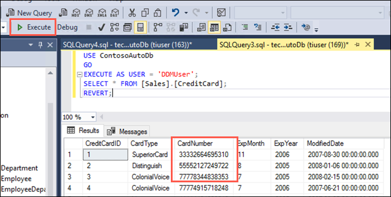The credit card number is unmasked in the query results.
You will now apply DDM on the CardNumber field to prevent it from being viewed in query results. Select New Query from the SSMS toolbar and paste the following query into the query window to apply a mask to the CardNumber field, replacing XXXXX with your unique ID. Select Execute to run the query.
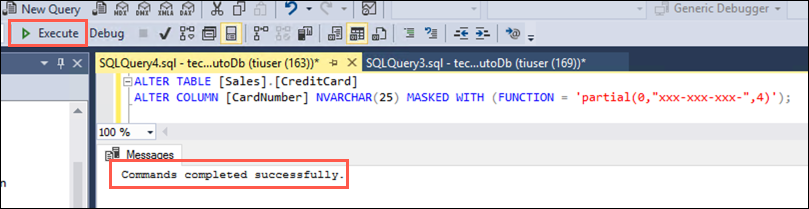The SQL script above is pasted into the new query window. The Execute button is highlighted and a success message is displayed in the Messages pane.
Run the SELECT query you opened in step 7 above again, and observe the results, specifically inspect the output in the CardNumber field. For reference the query is below. You replaced XXXXX in the USE statement to include the unique identifier of your database which will be ContosoAutoDb-XXXXX (e.g., ContosoAutoDb-01234).
The credit card number is masked in the query results.
The CardNumber is now displayed using the mask applied to it, so only the last four digits of the card number are visible. Dynamic Data Masking is a powerful feature that enables you to prevent unauthorized users from viewing sensitive or restricted information. It’s a policy-based security feature that hides the sensitive data in the result set of a query over designated database fields, while the data in the database is not changed.
Task 5: Add clustered columnstore index
ContosoAuto is looking to take advantage of some of the performance improvement features available in Azure SQL MI. In particular, they are interested in optimizing performance by using In-Memory technologies.
In this task, you will create a new table based on the existing [Sales].[SalesOrderDetail] table and apply a ColumnStore index.
Columnstore indexes are the standard for storing and querying large data warehousing fact tables. This index uses column-based data storage and query processing to achieve gains up to 10 times the query performance in your data warehouse over traditional row-oriented storage. You can also achieve gains up to 10 times the data compression over the uncompressed data size.
In SSMS, ensure you are connected to the Azure SQL Database Managed Instance.
Open a new query window by selecting New Query from the toolbar.
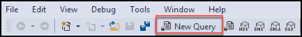The New Query icon is highlighted on the SSMS toolbar.
Copy the script below, and paste it into the query window. Replace XXXXX in the USE statement to include the unique identifier of your database which will be ContosoAutoDb-XXXXX (e.g., ContosoAutoDb-01234).
Select Execute on the toolbar to run the query, and create a new table named [Sales].[ColumnStore_SalesOrderDetail], populated with data from the [Sales].[SalesOrderDetail] table.
The Execute icon is highlighted on the SSMS toolbar.
Select New Query in the toolbar again, and paste the following query into the new query window. The query contains multiple parts; one to get the size of the ColumnStore_SalesOrderDetail table, a second to create a clustered ColumnStore index on the [Sales].[ColumnStore_SalesOrderDetail] table, and then the size query is repeated to get the size after adding the clustered ColumnStore index. Replace XXXXX in the USE statement to include the unique identifier of your database which will be ContosoAutoDb-XXXXX (e.g., ContosoAutoDb-01234).
In the query results, observe the Size_MB value of the table before and after the creation of the clustered ColumnStore index. The first value is the size before the index was created, and the second value is the size after the ColumnStore index was created.
The SSMS results pane is displayed, with the size of the [Sales].[ColumnStore_SalesOrderDetail] table highlighted both before and after the creation of the clustered ColumnStore index.
Create another new query window by selecting New Query from the toolbar, and then select Include Actual Execution Plan by selecting its button in the toolbar.
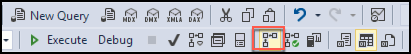The Include Actual Execution Plan icon is highlighted on the New Query the toolbar.
Paste the queries below into the new query window, replace XXXXX with your unique ID, and select Execute on the toolbar:
Running queries against both the SalesOrderDetail and ColumnStore_SalesOrderDetail will allow you to compare the query execution plans between tables with and without a columnstore index.
In the Results pane, select the Execution Plan tab. Check the Query cost (relative to the batch) percentage value of the two queries and compare them.
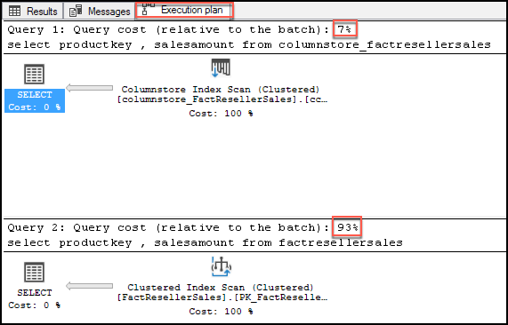The Execution Plan tab is highlighted in the Results pane, 12% is highlighted for Query 1, and 88% is highlighted for Query 2.
From the query cost, it is clear the query against the table with the columnstore index was more performant. Using a columnstore index, queries get an order of magnitude better performance boost with BatchMode processing, a unique value proposition in SQL Server. The basic idea of batch mode processing is to process multiple values, hence the term ‘batch’, together instead of one value at a time. Batch mode processing is perfectly suited for analytics where a large number of rows need to be processed, for example, to compute aggregates or apply filter predicates.
Run the same queries again, but this time set statistics IO on in the query by adding the following to the top of the query window:
Statistics IO reports on the amount of logical pages that are read in order to return the query results.
Select the Messages tab of the Results pane, and compare two numbers, logical reads and lob logical reads. You should see a significant drop in total number of logical reads on the columns store table.
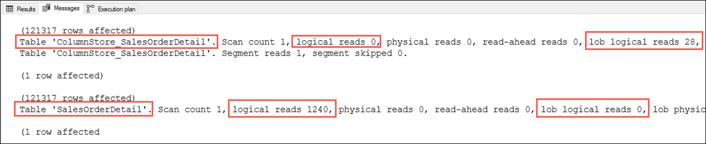Various information is highlighted on the Messages tab of the Results pane.
Task 6: Use online secondary for read-only queries
In this task, you will look at how you can use the automatically created online secondary for reporting, without feeling the impacts of a heavy transactional load on the primary database. Each database in the SQL MI Business Critical tier is automatically provisioned with several AlwaysON replicas to support the availability SLA.
High availability in this architectural model is achieved by replication of compute (SQL Server Database Engine process) and storage (locally attached SSD) deployed in 4-node cluster, using technology similar to SQL Server Always On Availability Groups. You can read more in the SQL Database high availability documentation.
Read Scale-Out allows you to load balance Azure SQL Database read-only workloads using the capacity of one read-only replica. This way the read-only workload will be isolated from the main read-write workload and will not affect its performance. To learn more, check out the SQL Database Read Scale-Out documentation.
Business Critical service tier: collocated compute and storage.
The feature is intended for the applications that include logically separated read-only workloads, such as analytics, and therefore could gain performance benefits using this additional capacity at no extra cost.
When you enable Read Scale-Out for a database, the ApplicationIntent option in the connection string provided by the client dictates whether the connection is routed to the write replica or to a read-only replica. Specifically, if the ApplicationIntent value is ReadWrite (the default value), the connection will be directed to the database’s read-write replica. This is identical to existing behavior. If the ApplicationIntent value is ReadOnly, the connection is routed to a read-only replica.
For example, the following connection string connects the client to a read-only replica of the tech-immersion-sql-mi database:
Note the addition of ApplicationIntent=ReadOnly; to the end of the connection string.
Using a web browser, navigate to the Azure portal, select Resource groups from the left-hand menu, and then select the resource group named tech-immersion-XXXXX (where XXXXX is the unique ID assigned to you for this workshop).
The tech-immersion resource group is selected.
In the tech-immersion resource group, select the techimmersionwebappXXXXX App Service from the list of resources (where XXXXX is the unique ID assigned to you for this workshop).
The App Service resource is selected from the list of resources in the tech-immersion resource group.
On the App Service overview blade, select the URL to open the web application in a browser window.
The App service URL is highlighted.
In the ContosoAuto web app, select Reports from the menu.
READ_WRITE is highlighted on the Reports page.
Note the READ_WRITE string on the page. This is the output from reading the Updateability propertry associated with the ApplicationIntent option on the target database. This can be retrieved using the SQL query SELECT DATABASEPROPERTYEX(DB_NAME(), "Updateability").
Return to the App Service blade, and then select Application settings under Settings on the left-hand side.
The Application settings item is selected under Settings.
On the Application settings blade, scroll down and locate the connection string named ContosoAutoDbReadOnlyContext within the Connection strings section.
The read-only connection string is highlighted.
Select the Value for the ContosoAutoDbReadOnlyContext and paste the following parameter to end of the connection string.
Select Save at the top of the Application settings blade.
The save button on the Application settings blade is highlighted.
Return to the ContosoAuto operations website you opened previously, and refresh the Reports page. The page should now look similar to the following:
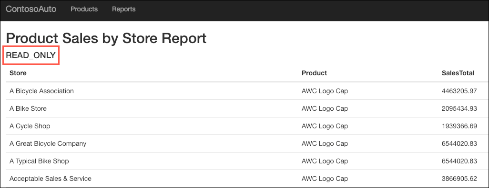READ_ONLY is highlighted on the Reports page.
Notice the updability option is now displaying as READ_ONLY. With a simple addition to your database connection string, you are able to send read-only queries to the online secondary of your SQL MI database, allowing you to load-balance read-only workloads using the capacity of one read-only replica. The SQL MI Business Critical cluster has built-in Read Scale-Out capability that provides free-of charge built-in read-only node that can be used to run read-only queries that should not affect performance of your primary workload.
Task 7: Review Advanced Data Security Vulnerability Assessment
SQL Database Advance Data Security (ADS) provides advanced SQL security capabilities, including functionality for discovering and classifying sensitive data, surfacing and mitigating potential database vulnerabilities, and detecting anomalous activities that could indicate a threat to your database. ADS is enabled at the managed instance level by selecting ON on the Advanced Data Security blade for your managed instance. This turns ADS on for all databases on the managed instance. ADS uses an Azure Blob Storage account to save the associated outputs (e.g., assessment and vulnerability reports). In the interest of time for this workshop, the steps to enable ADS have already been performed on the shared SQL MI.
In this task, you will review an assessment report generated by Advance Data Security for the ContosoAutoDb database and take action to remediate one of the findings in your copy of the ContosoAutoDb database.
Advanced Data Security is enabled at the server level, and for this workshop it has already been enabled on the SQL MI, so you will focus on just your user-specific database.
To review the Advanced Data Security assessment for your ContosoAutoDb-XXXXX database, navigate to the tech-immersion-shared-rg resource group.
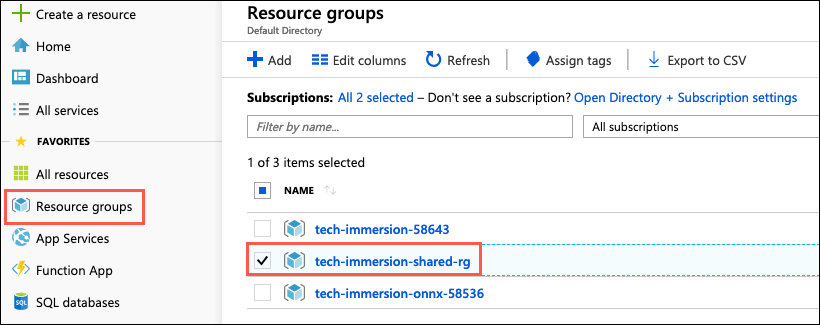The tech-immersion-shared-rs is highlighted under Resource groups.
In the shared resource group, select the SQL Managed Instance resource from the list.
The SQL MI resource is highlighted in the list of resources in the shared resource group.
On the SQL MI blade, select Overview from the left-hand menu.
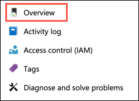The Overview menu item is highlighted.
On the SQL MI Overview blade, scroll down and locate the list of databases on the Managed Instance, and then select your copy of the ContosoAutoDb database, which will be named ContosoAutoDb-XXXXX (e.g., ContosoAutoDb-0123), where XXXXX is the unique identifier assigned to you for this workshop.
ContosoAutoDb is highlighted in the list of databases on the SQL MI.
You will see a list of all the databases on the SQL MI. Make sure you select the one which includes your assigned unique identifier from the list.
On the ContosoAutoDb-XXXXX Managed database blade, select Advanced Data Security under Security in the left-hand menu and then select the Vulnerability Assessment tile.
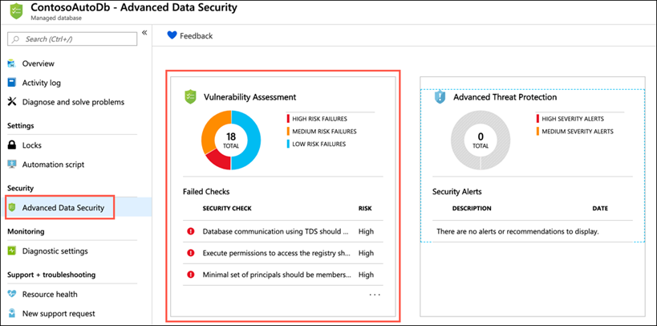Advanced Data Security is selected in the left-hand menu, and the Vulnerability tile is highlighted.
The SQL Vulnerability Assessment service is a service that provides visibility into your security state, and includes actionable steps to resolve security issues, and enhance your database security.
On the Vulnerability Assessment blade, select Scan on the toolbar.
Vulnerability assessment scan button.
When the scan completes, you will see a dashboard, displaying the number of failing checks, passing checks, and a breakdown of the risk summary by severity level.
The Vulnerability Assessment dashboard is displayed.
Scans are run on a schedule, so if you see a message that no vulnerabilities are found your database may not have been scanned yet. You will need to run a scan manually. To do this, select the Scan button on the toolbar, and follow any prompts to start a scan. This will take a minute or so to complete.
In the scan results, take a few minutes to browse both the Failed and Passed checks, and review the types of checks that are performed. In the Failed the list, locate the security check for Transparent data encryption. This check has an ID of VA1219.
The VA1219 finding for Transparent data encryption is highlighted.
Select the VA1219 finding to view the detailed description.
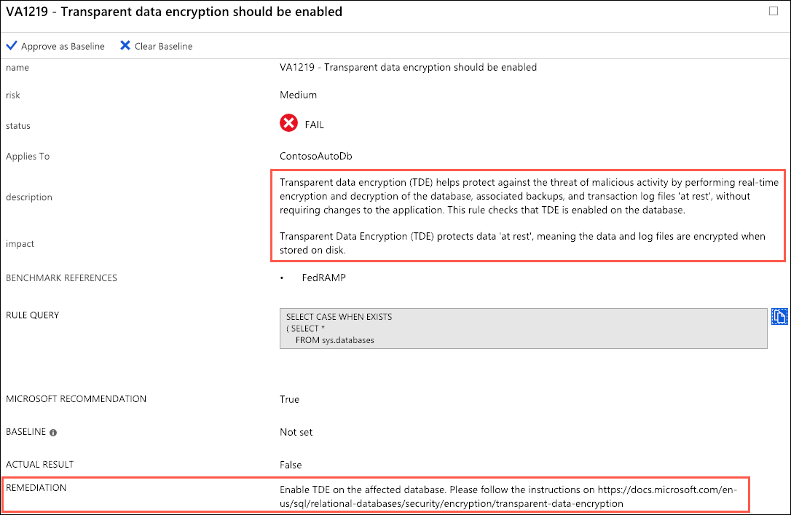The details of the VA1219 - Transparent data encryption should be enabled finding are displayed with the description, impact, and remediation fields highlighted.
The details for each finding provide more insight into the reason for the finding. Of note are the fields describing the finding, the impact of the recommeneded settings, and details on remediation for the finding.
Let’s now act on the recommendation remediation steps for the finding, and enable Transparent Data Encryption for the ContosoAutoDb database. To accomplish this, you will switch back to using SSMS for the next few steps.
Transparent data encryption (TDE) needs to be manually enabled for Azure SQL Managed Instance. TDE helps protect Azure SQL Database, Azure SQL Managed Instance, and Azure Data Warehouse against the threat of malicious activity. It performs real-time encryption and decryption of the database, associated backups, and transaction log files at rest without requiring changes to the application.
In SSMS, select New Query from the toolbar, paste the following SQL script into the new query window. Replace <XXXXX> in the ALTER DATABASE statement to include the unique identifier of your database which will be ContosoAutoDb-XXXXX (e.g., ContosoAutoDb-0123).
A new query window is displayed, with the script above pasted into it.
You turn transparent data encryption on and off on the database level. To enable transparent data encryption on a database in Azure SQL Managed Instance use must use T-SQL.
Select Execute from the SSMS toolbar. After a few seconds, you will see a message that the “Commands completed successfully.”
The Excute button is highlighted on the SSMS toolbar, and the Commands completed successfully message is highlighted in the output window.
You can verify the encryption state and view information the associated encryption keys by using the sys.dm_database_encryption_keys view. Select New Query on the SSMS toolbar again, and paste the following query into the new query window:
The query above is pasted into a new query window in SSMS.
Select Execute from the SSMS toolbar. You will see two records in the Results window, which provide information about the encryption state and keys used for encryption.
The Execute button on the SSMS toolbar is highlighted, and in the Results pane the two records about the encryption state and keys for the ContosoAutoDb database are highlighted.
By default, service-managed transparent data encryption is used. A transparent data encryption certificate is automatically generated for the server that contains the database.
Return to the Azure portal and the Vulnerability Assessment blade for your copy of the ContosoAutoDb managed database (e.g, ContosoAutoDb-0123). On the toolbar, select Scan to start a new assessment of the database.
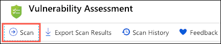The Scan button on the SQL MI Vulnerability Assessment dialog is highlighted.
When the scan completes, notice that the numbers for failing and passing checks has changed. The number of failing checks has been reduced by 1 and the number of passing checks has increased by 1.
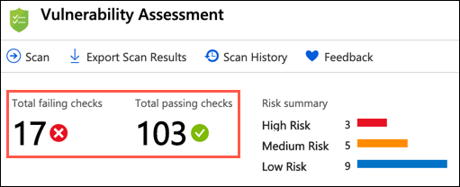The total number of failing and passing checks is highlighted.
On the Failed tab, enter VA1219 into the search filter box, and observe that the previous failure is no longer in the Failed list.
The Failed tab is highlighted and VA1219 is entered into the search filter. The list displays no results.
Now, select the Passed tab, and observe the VA1219 check is listed with a status of PASS.
The Passed tab is highlighted and VA1219 is entered into the search filter. VA1219 with a status of PASS is highlighted in the results.
Using the SQL Vulnerability Assessment it is simple to identify and remediate potential database vulnerabilities, allowing you to proactively improve your database security.
Task 8: SQL Data Discovery and Classification
In this task, you will look at another Advanced Data Security feature available within the SQL MI database, SQL Data Discovery and Classification. Data Discovery & Classification introduces a new tool built into SQL Server Management Studio (SSMS) for discovering, classifying, labeling & reporting the sensitive data in your databases. It introduces a set of advanced services, forming a new SQL Information Protection paradigm aimed at protecting the data in your database, not just the database. Discovering and classifying your most sensitive data (business, financial, healthcare, etc.) can play a pivotal role in your organizational information protection stature.
> This functionality is not currently available for SQL MI through the Azure portal, so you return to SSMS to use this capability.
In SSMS, right-click the ContosoAutoDb-XXXXX database (e.g., ContosoAutoDb-0123) in the Object Explorer (where XXXXX is the unique identifier assigned to you for this workshop), and then select Tasks and Classify Data in the context menus.
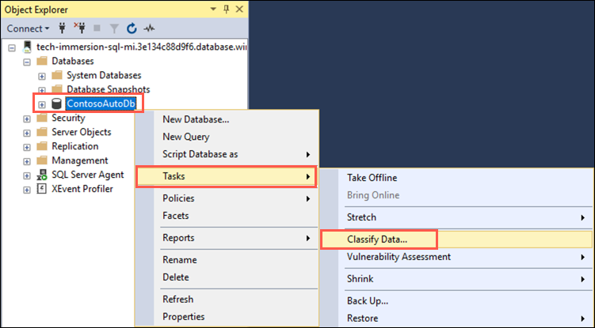The Tasks > Classify Data context menu items are highlighted for the ContosoAutoDb database in SSMS.
In the Data Classification - ContosoAutoDb window, select the info link with the message 39 columns with classification recommendations (click to view).
The link to classification recommendations is displayed.
In the list of classification recommendations, select the recommendation for the NationalIDNumber field, and then expand the Sensitivity Label drop down list. You can see the list of built-is sensitivity classification, including those related to compliance requirements around GDPR.
The NationalIDNumber field is highlighted within the recommenations list, and the Sensitivity Label drop down is expanded and highlighted.
Select the check box at the top of the list to select all of the recommended classifications, and then select Accept selected recommendations.
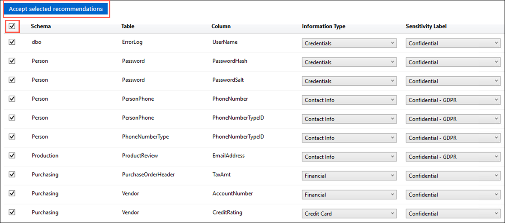All the recommended classifications are checked and the Accept selected recommendations button is highlighted.
Select Save on the toolbar of the Data Classification window.
Save the updates to the classified columns list.
Select View Report on the Data Classification window to generate a report with a full summary of the database classification state.
The View Report button is highlighted on the toolbar.
View the report.
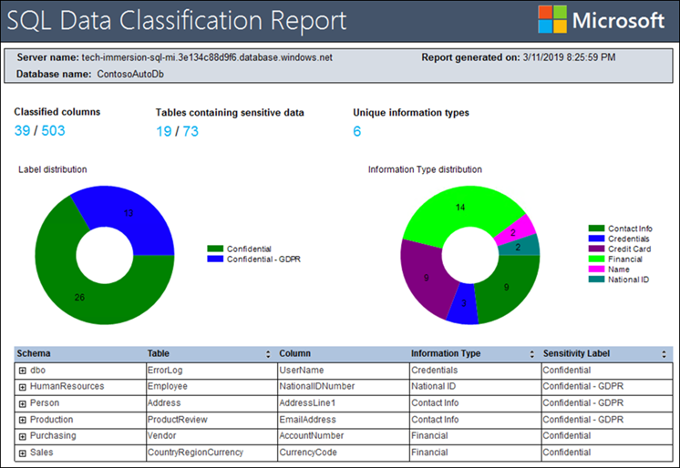The SQL Data Classification Report is displayed.
Wrap-up
In this experience you unlocked new capabilities for a SQL Server 2008 R2 database by performing a friction-free migration to Azure SQL Database Managed Instance. You learned how Azure SQL Database Managed Instance enables you to migrate on-premises databases quickly and easily into a fully-managed PaaS database running in Azure, with no application code changes. SQL MI provides a migration path for databases using features, such as Service broker, which previously prevented them from running in Azure SQL Database.
After you migrated the database into SQL MI, you explored some of advanced SQL features available only in Azure, including Advanced Data Security Vulnerability Assessments and Data Classification and Discovery. In addition, you enabled Dynamic Data Masking and created a ColumnStore index on a table in the database, demonstrating how SQL MI allows you to utilize features unavailable in SQL Server 2008 R2. You also examined how to connect to an online secondary replica of your database, which provides a free read-only copy of your database. This feature takes advantage of one the high-availability features of the Azure SQL MI Business Critical service tier.
This experience was meant to provided a brief introduction to Azure SQL Database Managed Instance. There are many more features of SQL MI that you can now explore, including Advanced Threat Detection and Transactional replication. Threat detection for Azure SQL Database Managed Instance detects anomalous activities indicating unusual and potentially harmful attempts to access or exploit databases. Transactional replication allows you to replicate data into an Azure SQL MI database from a remote SQL Server database or another instance database. You an also use it to push changes made in an instance database in SQL MI to a remote SQL Server database, to a single database in Azure SQL Database, or to a pooled database in an Azure SQL Database elastic pool.
Additional resources and more information
Use the links below as a starting point to continue learning about the capabilities and features available with Azure SQL Database Managed Instance.


![The SSMS results pane is displayed, with the size of the [Sales].[ColumnStore_SalesOrderDetail] table highlighted both before and after the creation of the clustered ColumnStore index.](media/ssms-sql-mi-columnstore-size-reduction.png "ColumnStore_SalesOrderDetail size query results")